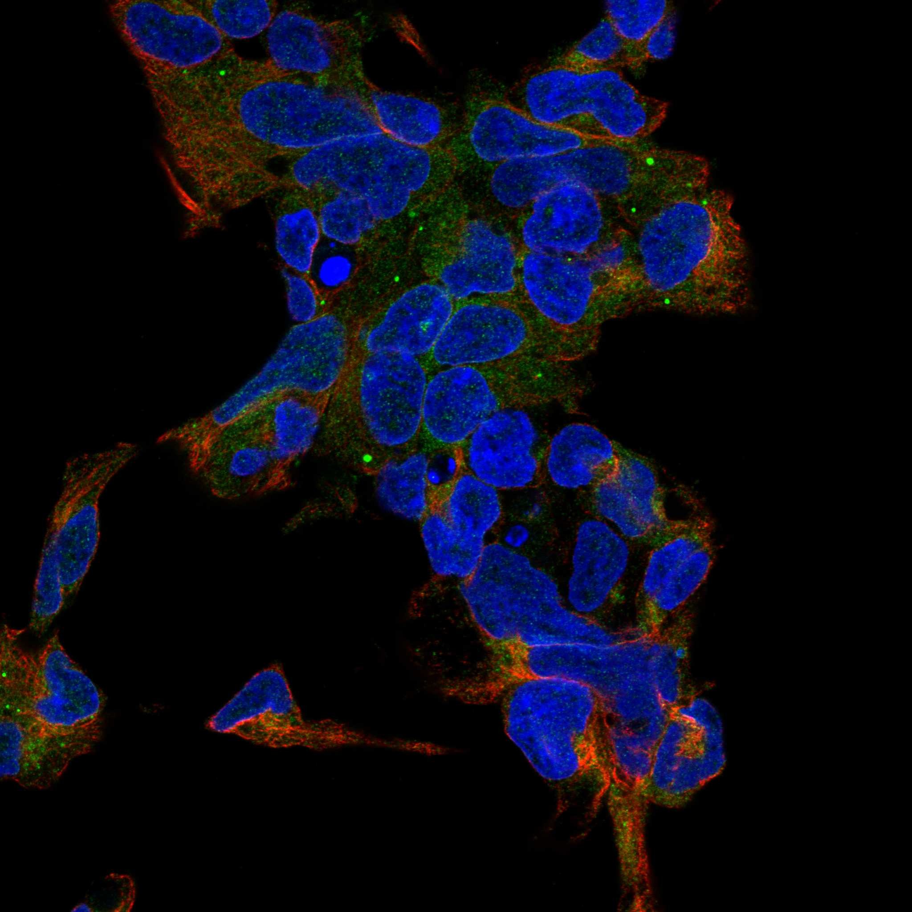
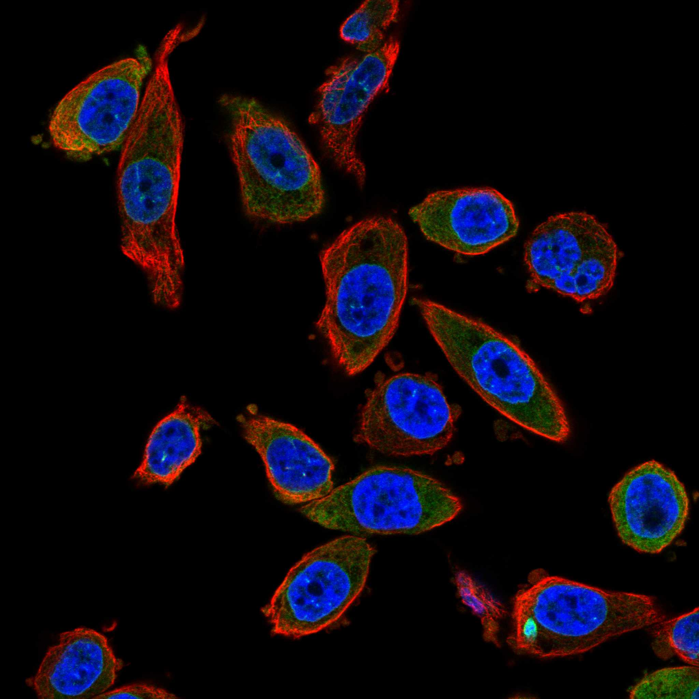
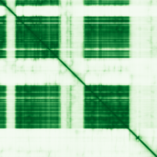

type: protein-evaluation gene: "FAM120C" date: 2026-06-03 tags: [protein-scout, nuclear-protein, evaluation] status: scored ---
FAM120C 核蛋白评估报告 (Full Re-evaluation)
1. 基本信息
| 项目 | 内容 |
|---|---|
| 基因名 / 别名 | FAM120C / CXorf17 |
| 蛋白名称 | Constitutive coactivator of PPAR-gamma-like protein 2 |
| 蛋白大小 | 1096 aa / 120.6 kDa |
| UniProt ID | Q9NX05 |
| 评估日期 | 2026-06-03 |
IF 图像:  
2. 评分总览
| 维度 | 得分 | 满分 | 加权后 | 关键证据摘要 |
|---|---|---|---|---|
| 核定位特异性 | 7/10 | ×4 | 28 | HPA: Nuclear membrane; 额外: Endoplasmic reticulum; UniProt: 无注释 |
| 蛋白大小 | 8/10 | ×1 | 8 | 1096 aa / 120.6 kDa |
| 研究新颖性 | 10/10 | ×5 | 50 | PubMed strict=5 篇 (≤20→10) |
| 三维结构 | 6/10 | ×3 | 18 | AlphaFold v6 pLDDT=68.2; PDB: 无 |
| 调控结构域 | 7/10 | ×2 | 14 | InterPro: IPR026784, IPR029060 |
| PPI 网络 | 3/10 | ×3 | 9 | STRING 15 partners; IntAct 15 interactions |
| 互证加分 | — | max +3 | 1.0 | PDB+AF+STRING+IntAct cross-validation |
| 原始总分 | 128.0/180 | |||
| 归一化总分 | 71.1/100 |
3. 详细分析
3.1 核定位证据
| 来源 | 定位 | 可信度 |
|---|---|---|
| Protein Atlas (IF) | Nuclear membrane; 额外: Endoplasmic reticulum | Approved |
| UniProt | 无注释 | Swiss-Prot/TrEMBL |
IF 图像获取: IF图像已下载并嵌入 (2张)
GO Cellular Component:
- nucleus (GO:0005634)
结论: 主要核定位，HPA 可靠性良好，有辅助数据源支持。
3.2 蛋白大小评估
评价: 大小基本合适，可用于常规实验。
3.3 研究现状
| 指标 | 数值 |
|---|---|
| PubMed strict count | 5 |
| PubMed broad count | 6 |
| 别名(未计入scoring) | Aliases observed but not used for scoring: CXorf17 |
关键文献: 1. A multi-scale map of cell structure fusing protein images and interactions.. *Nature*. PMID: 34819669 2. The Prognostic Signature of Head and Neck Squamous Cell Carcinoma Constructed by Immune-Related RNA-Binding Proteins.. *Frontiers in oncology*. PMID: 35449571 3. A complex Xp11.22 deletion in a patient with syndromic autism: exploration of FAM120C as a positional candidate gene for autism.. *American journal of medical genetics. Part A*. PMID: 25258334 4. Genome-wide identification of alternative splicing and splicing regulated in immune infiltration in osteosarcoma patients.. *Frontiers in genetics*. PMID: 37139238 5. Autism-associated familial microdeletion of Xp11.22.. *Clinical genetics*. PMID: 18498374
评价: 极度新颖，几乎未被系统研究（PubMed ≤20篇）。
3.4 三维结构分析
| 指标 | 数值 |
|---|---|
| AlphaFold 版本 | v6 |
| AlphaFold 平均 pLDDT | 68.2 |
| 高置信度残基 (pLDDT>90) 占比 | 42.6% |
| 置信残基 (pLDDT 70-90) 占比 | 13.4% |
| 中等置信 (pLDDT 50-70) 占比 | 4.4% |
| 低置信 (pLDDT<50) 占比 | 39.6% |
| 有序区域 (pLDDT>70) 占比 | 56.0% |
| 可用 PDB 条目 | 无 |
PAE (Predicted Aligned Error): 
评价: AlphaFold 预测质量有限（pLDDT=68.2），有序残基占 56.0%。
3.5 结构域分析
| 来源 | 结构域 |
|---|---|
| InterPro/Pfam | InterPro: IPR026784, IPR029060 |
染色质调控潜力分析: 存在已知结构域注释，可作为功能研究的结构基础。
3.6 PPI 网络
STRING 预测互作 (combined score >0.4):
| Partner | Combined Score | Experimental | 功能类别 |
|---|---|---|---|
| PHF8 | 0.877 | 0.000 | — |
| WNK3 | 0.872 | 0.000 | — |
| DNAJC28 | 0.720 | 0.000 | — |
| MPLKIP | 0.719 | 0.000 | — |
| BIVM-ERCC5 | 0.715 | 0.000 | — |
| ERCC5 | 0.668 | 0.000 | — |
| SUGCT | 0.608 | 0.000 | — |
| CTTNBP2 | 0.593 | 0.000 | — |
| TAX1BP1 | 0.587 | 0.000 | — |
| CWC15 | 0.571 | 0.000 | — |
实验验证互作 (IntAct):
| Partner | 方法 | PMID | ||
|---|---|---|---|---|
| SUMO1 | psi-mi:"MI:0004"(affinity chromatography technolog | pubmed:17000644 | imex:IM-19940 | |
| ESR1 | psi-mi:"MI:0676"(tandem affinity purification) | pubmed:31527615 | imex:IM-26954 | |
| P4HA3 | psi-mi:"MI:0007"(anti tag coimmunoprecipitation) | pubmed:28514442 | doi:10.1038/na | |
| HNRNPU | psi-mi:"MI:0007"(anti tag coimmunoprecipitation) | pubmed:26496610 | imex:IM-24272 | |
| SEC16A | psi-mi:"MI:0007"(anti tag coimmunoprecipitation) | pubmed:26496610 | imex:IM-24272 | |
| Rpl35 | psi-mi:"MI:0007"(anti tag coimmunoprecipitation) | pubmed:26496610 | imex:IM-24272 | |
| YBX1 | psi-mi:"MI:0006"(anti bait coimmunoprecipitation) | pubmed:25497084 | imex:IM-23306 | |
| Pde4dip | psi-mi:"MI:0006"(anti bait coimmunoprecipitation) | pubmed:28671696 | doi:10.1038/nn | |
| Fmr1 | psi-mi:"MI:0006"(anti bait coimmunoprecipitation) | pubmed:28671696 | doi:10.1038/nn | |
| FAM120A | psi-mi:"MI:0007"(anti tag coimmunoprecipitation) | pubmed:33961781 | imex:IM-29278 |
PPI 互证分析:
- STRING + IntAct 均有数据
- STRING partners: 15，IntAct interactions: 15
- 调控相关比例: 1 / 15 = 7%
评价: STRING 15 个预测互作，IntAct 15 个实验互作。调控相关配体占比 7%。
3.7 多库互证
| 维度 | 来源 | 结果 | 是否一致 |
|---|---|---|---|
| 三维结构 | AlphaFold pLDDT=68.2 + PDB: 无 | pLDDT=68.2, v6 | 仅预测 |
| 定位 | UniProt + HPA | 无注释 / Nuclear membrane; 额外: Endoplasmic reticulum | 一致 |
| PPI | STRING + IntAct | 15 + 15 interactions | 数据充分 |
互证加分明细:
- PDB + AlphaFold 双源验证: +0
- 多库定位一致 (2源): +0.5
- STRING + IntAct 双源验证: +0.5
- 结构域 + AlphaFold 质量: +0
- PDB 多条目覆盖: +0
总分: +1.0 / max +3
4. 总体评价
推荐等级: ⭐⭐⭐⭐
核心优势: 1. FAM120C — Constitutive coactivator of PPAR-gamma-like protein 2，极度新颖，几乎未被系统研究（PubMed ≤20篇）。 2. 蛋白大小1096 aa，大小基本合适，可用于常规实验。
风险/不确定性: 1. PubMed 5 篇，研究基础极有限，功能注释不完整 2. AlphaFold 预测质量一般（pLDDT=68.2），需要更多实验结构验证
下一步建议:
- [ ] 查阅最新关键文献补充研究背景
- [ ] 获取 Protein Atlas IF 图像确认亚细胞定位
- [ ] 设计体外实验验证核定位及潜在调控功能
5. 数据来源
- UniProt: https://www.uniprot.org/uniprotkb/Q9NX05
- Protein Atlas: https://www.proteinatlas.org/ENSG00000184083-FAM120C/subcellular
- PubMed: https://pubmed.ncbi.nlm.nih.gov/?term=FAM120C
- AlphaFold: https://alphafold.ebi.ac.uk/entry/Q9NX05
- STRING: https://string-db.org/network/9606.ENSP00000
- Data fetched live: 2026-06-03